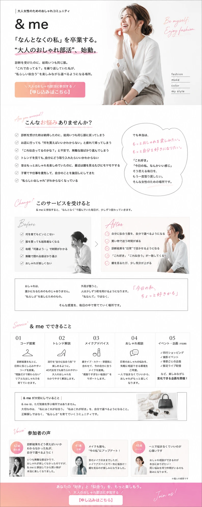
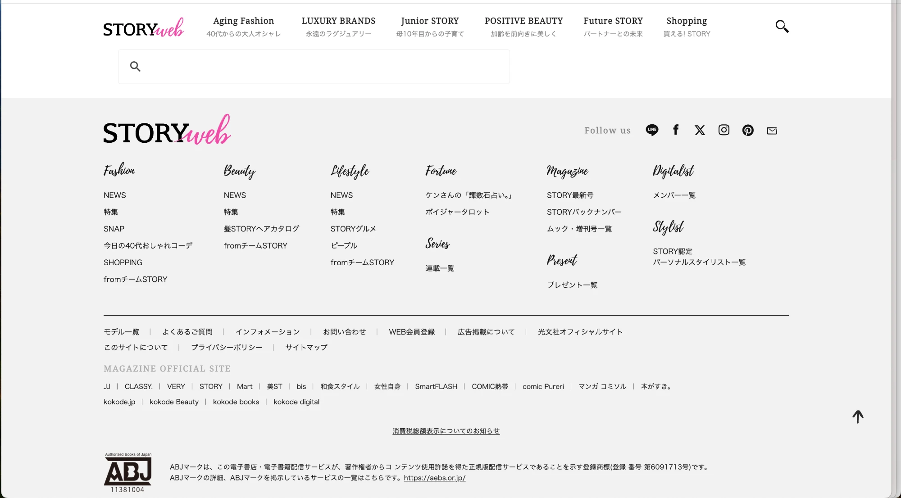

プロンプトの違いで LP の仕上がりはどう変わる？6バージョン検証レポート
同じサービス「& me（ファッションコミュニティ）」のLPを、プロンプトの種類・詳しさを段階的に変えながら6バージョン作成。
初心者でも再現できる指示の出し方を探り、どのレベルで品質が跳ね上がるかを確認します。
サービス内容・コピー・構成をテキストで渡す
ChatGPT生成の参考画像と詳細な変更指示を一緒に送る
フォント変更・レイアウト修正を言葉だけで具体的に伝える
好みのサイトのSSを送り「この色に」と一言で伝える
ルールを詳細化した独自プロンプトで一発生成
完成品のSSを渡して「このデザインで」と指示
のどかさんが書いてくれたサービス概要・コピー・セクション構成を、ほぼそのままClaude Codeに貼り付けて作成。画像も参考サイトも提示なし。
ChatGPTで作ったファッションLP風の画像をそのまま添付し、「この雰囲気で直して」と具体的な変更点もテキストで一緒に伝えたバージョン。

画像なし。「筆記体に変更して」「このセクションのレイアウトを組み直して」と、言葉だけで具体的な修正を2回に分けて伝えたバージョン。
STORYwebのスクリーンショットを1枚添付して「グレーと黒とピンクの色にして」と一言だけ。これだけでイメージ通りの配色に変わった最終版。

のどかさんの構成案はそのまま。プロンプトのルール部分を大幅にブラッシュアップ。コピーの具体性・CSS変数管理・見出し文字数・感情と機能の書き方まで細かく指定した版。
出来上がったLPのスクリーンショットを添付し、構成案と合わせてデザイン要素を言語化したプロンプトで再現依頼。筆記体デコ・吹き出し・年齢バッジなど細部まで指定した最新版。
初心者がLPを作るときの「プロンプトの出し方」チェックリストとして活用できます
| バージョン | 指示の内容 | デザイン精度 | 所要ラリー数 | おすすめ度 |
|---|---|---|---|---|
| Ver.01 テキスト仕様書のみ |
コピー＋構成のテキスト | 構成はOK、ビジュアル弱め | 1〜2回 | |
| Ver.02 ChatGPT画像追加 |
テキスト＋AI生成画像 | ムード感UP・色は未調整 | 2〜3回 | |
| Ver.03 テキストで細かく指示 |
画像なし・短いテキスト2回 | フォント・構成の細かい修正が反映 | 2回（分けて送付） | |
| Ver.04 参考SS＋一言指示 |
参考サイトのSS＋「この色にして」一言 | ブランドの世界観が完成 | 1回 | |
| Ver.05 ゆみの改良プロンプト |
ルールを詳細化したプロンプト＋のどかさん構成案 | 構成・デザイン・コピーが一段洗練 | 1回（プロンプト作成コストあり） | |
| Ver.06 完成SSから再現（あや） |
完成LPのSS＋デザイン要素を言語化したプロンプト | 筆記体・吹き出し・バッジまで細部が一致 | 1回（SS＋デザイン要素の言語化が必要） |
ゆみ・ちゃかな：自分が試したプロンプトをここに追加できます
GitHubのエディタでファイルを開く （要ログイン・コラボレーター権限）
VER.04 の閉じタグ <!-- /VER.04 --> の直後に貼り付けてください
ページ下部の「Commit changes」ボタンを押して保存。数分後に公開URLに反映されます。